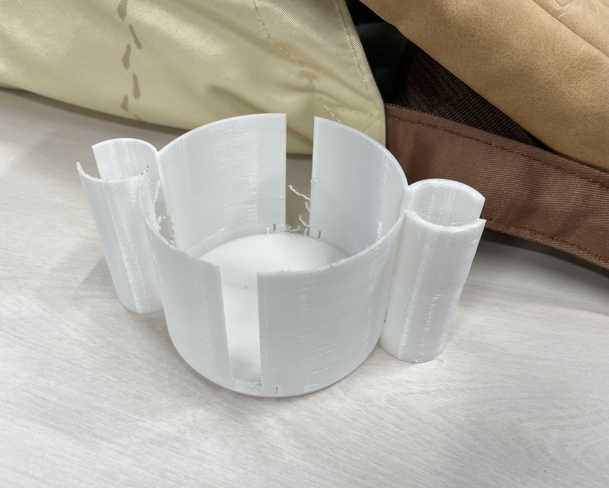

プロトタイピングの振り返り
グループで話し合い取り上げた物
話し合いの結果、自分が観察した母親の抱えた問題について何か、いわゆる補助できるアイテムを作れないかと言う話にまとまった。
前回のプロトタイピングより、タイヤの固定ではあまりにも不十分であると言う結果を得たことを踏まえ、
考え出された案の中から現実的なものとして、半ば消去法ではあるが「手すりを利用したベビーカーの固定方法」に行き着いた。

イメージとしては、便利機能も備えつつ優先席にある手すりにベビーカーを固定できる物。
ベビーカーには斜めになっている部分があるため、そこを考慮した上で手すりと固定を試みることが大きな課題になりそうだと感じていた。
とりあえずは「優先席の手すりにくっつけられる物を作る」ことに集中した。
そうしてできた物がこれである。

結局斜めの問題にどうアプローチするか、色々と考えたがこうなってしまった。
↓stl.ファイルをダウンロードする場合はこちらをどうぞ
stl.ファイルをダウンロード